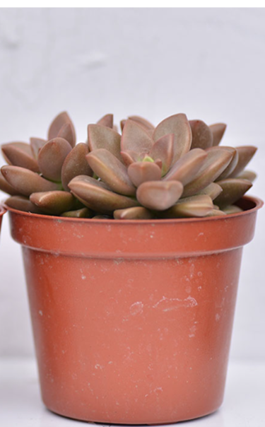

多肉植物相談所
Succulent plants

多肉植物是一種特別適合初學者的植物，因為它們相對容易照料並能在室內或室外環境中生存。以下是一些多肉植物的基本養護方法：
- 1.適當的照明：
- 多肉植物喜歡明亮的光線，可以放在室內靠近窗戶的位置，或者在室外陰涼處。避免直接暴露在強烈陽光下，尤其是在夏季的炎熱時段。
總結來說，
多肉植物的養護相對簡單，主要是確保它們獲得適當的光線、水分和溫度，並且適時進行基本的維護。通過這些基本的方法，可以确保您的多肉植物能夠健康茁壯地生長。
悶養是什麼?
悶養是指在植株澆水後，用專用的悶養蓋或是用任何透明的罩子將植株整盆罩住，留下少量的透氣孔，並在加蓋前噴灑部分水分在蓋子上，讓罩子內的空氣濕度提高到接近100%，空氣濕度的提高能讓植物減緩水分從蒸散作用中散失。悶養對多肉好嗎？
什麼樣的多肉適合悶養?
這個問題其實不是那麼好回答，需要評估種植環境、澆水頻率、多肉品種等等因素；適合悶養的多肉品種之一首推玉露，玉露經過悶養提高空氣濕度，可讓玉露的窗邊更透更亮，不過悶養還是有可能引發許多潛在的問題！
接下來我們一一列出可能會發生的狀況希望你們能種出更美的植株，而且悶養確實能讓植物在短時間變成好看的狀態。
| 晶瑩剔透的玉露 | |
|---|---|
.jpg) |
|
| 經過悶養的玉露，更加透亮、飽滿。 |
染菌
高濕度會讓大部分的細菌有更高的活力與繁殖力，再加上悶養時會讓通風度降低，容易發生染菌的問題。徒長
植株的徒長除了和陽光有關外，也和環境通風度與濕度有關，高濕度環境如果沒有搭配較高強度的陽光，就容易發生徒長，更不用說悶養時的空氣濕度接近100%了。| 正常的姬朧月 | 徒長的姬朧月 |
|---|---|
|  | |
| 葉片緊密，呈現好看的花形。 | 葉片間距拉大，像棵小樹。 |
什麼樣的多肉不適合悶養？
△ 植物有葉傷尚未痊癒
△ 發生徒長不久/徒長太過嚴重的植物
△ 植物狀態乾扁太久
△ 夏天的任何狀態
水苔是什麼?
種植多肉植物時使用的「水苔」，通常指的是一種特殊的栽培介質，主要用於多肉植物的生長和栽培。這種水苔通常是一種鬆散、透氣性良好的材料，其主要作用是提供良好的根系生長環境，幫助植物吸收水分和養分。
水苔的特點是什麼？
水苔的主要特點包括：
- 透氣性良好：水苔能夠有效保持良好的空氣流通性，避免根部缺氧。
- 保水性強：水苔具有良好的保水能力，能夠吸收和保持適量的水分，提供植物需要的水分。
- 低養分：一般來說，水苔本身不含豐富的養分，因此通常需要搭配添加肥料或者其他有機質來提供植物生長所需的養分。
- 輕便易用：水苔質地輕盈，便於管理和更換。
在多肉植物的栽培中，水苔常被用來作為其根系的生長介質，有助於避免植株過度濕潤和根部腐爛的問題，同時也提供了良好的生長環境。
提示
登出成功
客服資訊
服務時間：周一至周五 10:00~17:00
信箱：succ@gma!l.com
電話：04-8888-6666
地址：台中市西曬區台灣小道切八段1號102樓